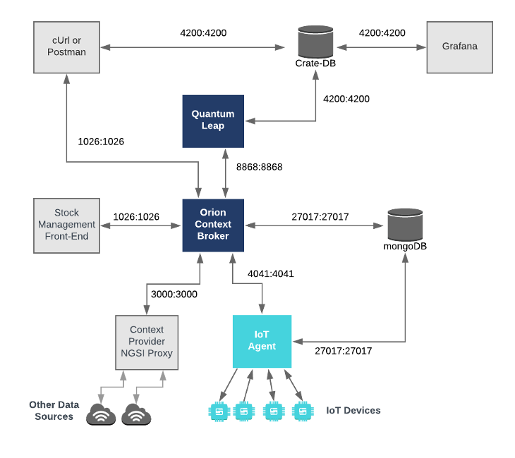

9. Smart City con FIWARE
9.1. ¿Qué es una Smart City?
Una Smart City (ciudad inteligente) es una urbe que utiliza tecnologías digitales y de comunicación para mejorar la eficiencia de los servicios urbanos, optimizar el uso de los recursos y mejorar la calidad de vida de los ciudadanos.
A través de sensores IoT, Big Data, inteligencia artificial y plataformas digitales, las Smart Cities pueden gestionar de manera inteligente infraestructuras como el tráfico, el alumbrado público, la gestión de residuos y la seguridad ciudadana.
9.2. Introducción a FIWARE y las Smart Cities
FIWARE es una plataforma de código abierto que proporciona componentes para desarrollar soluciones inteligentes, especialmente en el ámbito de las Smart Cities. Permite gestionar datos en tiempo real mediante una arquitectura basada en microservicios.

9.3. Arquitectura de FIWARE
FIWARE está compuesto por varios elementos clave:
- Context Broker (Orion): Es el núcleo de FIWARE. Se encarga de la gestión del contexto de la ciudad, almacenando y proporcionando datos en tiempo real sobre las entidades urbanas. Permite la comunicación entre dispositivos IoT y aplicaciones a través de la API NGSI.
- IoT Agents: Son intermediarios entre los dispositivos IoT y el Context Broker. Actúan como traductores de protocolos, permitiendo la comunicación con sensores y actuadores a través de protocolos como MQTT, HTTP y LwM2M.
- Cygnus: Componente encargado de la persistencia de datos. Se integra con bases de datos y sistemas de almacenamiento como MySQL, PostgreSQL, MongoDB o Hadoop, asegurando la trazabilidad de la información.
- Quantum Leap: Servicio especializado en la gestión y análisis de datos históricos. Permite la consulta y visualización de series temporales mediante la integración con bases de datos como CrateDB.
- Security & Identity Management (Keyrock, PEP Proxy, Wilma, Authzforce): Garantiza la autenticación y autorización de usuarios y dispositivos dentro de FIWARE.
- Keyrock: Proporciona gestión de identidades y autenticación basada en OAuth2.
- PEP Proxy y Wilma: Protegen las API asegurando que solo usuarios autorizados puedan acceder a los servicios.
- Authzforce: Proporciona control de acceso basado en políticas (ABAC).
- NGSI-v2: Es el estándar de intercambio de datos en FIWARE basado en Linked Data, que permite la interoperabilidad entre diferentes sistemas dentro de una Smart City.
- NGSI-LD: Es el nuevo estándar de intercambio de datos en FIWARE basado en Linked Data.
 Fuente: https://documenter.getpostman.com/view/513743/RWEnkvDc
3.1. Estructura de Datos en el Context Broker Orion
El Context Broker Orion almacena información sobre entidades de la Smart City en un formato JSON basado en NGSI. Cada entidad representa un objeto del mundo real y tiene atributos asociados.
Ejemplo de estructura de una entidad en Orion:
{
"id": "sensor001",
"type": "TemperatureSensor",
"temperature": {
"value": 25,
"type": "Number"
},
"location": {
"type": "geo:point",
"value": "40.4168,-3.7038"
},
"timestamp": {
"type": "DateTime",
"value": "2024-02-13T10:15:00Z"
}
}
Componentes clave de la estructura de datos:
id: Identificador único de la entidad.-
type: Tipo de entidad (ej.TemperatureSensor,Vehicle,StreetLight). -
Atributos:
value: Valor del atributo en tiempo real.type: Tipo de dato (Number,Text,DateTime,geo:point).metadata(opcional): Información adicional sobre el atributo, como unidades de medida.
Creación de Entidades en Orion
Para crear una entidad en Orion Context Broker, se utiliza una petición HTTP POST a la API NGSI v2:
curl -X POST \
http://localhost:1026/v2/entities \
-H 'Content-Type: application/json' \
-d '{
"id": "sensor002",
"type": "HumiditySensor",
"humidity": {
"value": 55,
"type": "Number"
},
"location": {
"type": "geo:point",
"value": "40.4168,-3.7038"
}
}'
Actualización de Datos en una Entidad
Para actualizar un atributo de una entidad, se usa una petición HTTP PATCH:
curl -X PATCH \
http://localhost:1026/v2/entities/sensor002/attrs \
-H 'Content-Type: application/json' \
-d '{
"humidity": {
"value": 60
}
}'
Consulta de Datos en una Entidad
Para obtener la información de una entidad específica:
curl -X GET \
http://localhost:1026/v2/entities/sensor002 \
-H 'Accept: application/json'
Relación entre entidades
Las entidades pueden estar relacionadas mediante atributos referenciales:
{
"id": "vehicle001",
"type": "Car",
"speed": {
"value": 60,
"type": "Number"
},
"location": {
"type": "geo:point",
"value": "40.7128,-74.0060"
},
"driver": {
"type": "Relationship",
"value": "person123"
}
}
En este caso, la entidad vehicle001 tiene una relación con la entidad person123.
9.4. Despliegue de FIWARE en una Smart City
9.4.1. Requisitos
Para desplegar FIWARE en una Smart City se necesitan:
- Servidores o infraestructura en la nube (ej. AWS, Azure, Google Cloud, OpenStack)
- Contenedores Docker y orquestación con Docker Compose o Kubernetes
- Base de datos como MongoDB para el Context Broker Orion
- Configuración de redes y seguridad para la comunicación entre los distintos componentes
9.4.2. Configuración de FIWARE
Un ejemplo de configuración con Docker podría ser este
version: "3.8"
services:
mongo-db:
image: mongo:4.4
container_name: mongo-db
restart: always
ports:
- "27017:27017"
networks:
- fiware-net
orion:
image: fiware/orion
container_name: orion
restart: always
depends_on:
- mongo-db
ports:
- "1026:1026"
command: -dbhost mongo-db -logLevel DEBUG
networks:
- fiware-net
iot-agent:
image: fiware/iotagent-ul
container_name: iot-agent
restart: always
depends_on:
- mongo-db
ports:
- "4041:4041"
environment:
- IOTA_CB_HOST=orion
- IOTA_CB_PORT=1026
- IOTA_NORTH_PORT=4041
- IOTA_REGISTRY_TYPE=mongodb
- IOTA_MONGO_HOST=mongo-db
- IOTA_MONGO_PORT=27017
networks:
- fiware-net
cygnus:
image: fiware/cygnus-ngsi
container_name: cygnus
restart: always
depends_on:
- mongo-db
ports:
- "5080:5080"
environment:
- CYGNUS_MONGO_HOSTS=mongo-db:27017
- CYGNUS_SERVICE_PORT=5080
networks:
- fiware-net
quantumleap:
image: smartsdk/quantumleap
container_name: quantumleap
restart: always
depends_on:
- crate-db
ports:
- "8668:8668"
environment:
- CRATE_HOST=crate-db
networks:
- fiware-net
crate-db:
image: crate
container_name: crate-db
restart: always
ports:
- "4200:4200"
- "5432:5432"
networks:
- fiware-net
keyrock:
image: fiware/idm
container_name: keyrock
restart: always
depends_on:
- mysql-db
ports:
- "3005:3005"
environment:
- IDM_DB_HOST=mysql-db
- IDM_DB_PASS=idm
networks:
- fiware-net
mysql-db:
image: mysql:5.7
container_name: mysql-db
restart: always
environment:
- MYSQL_ROOT_PASSWORD=root
- MYSQL_DATABASE=idm
- MYSQL_USER=idm
- MYSQL_PASSWORD=idm
networks:
- fiware-net
networks:
fiware-net:
driver: bridge
9.5. Integración de Sensores IoT
Para conectar sensores IoT con FIWARE necesitamos:
- Usar IoT Agents (ejemplo: IoT Agent JSON)
- Registrar sensores en el Context Broker mediante una petición HTTP POST.
9.5.1. Conexión de Sensores a FIWARE
Los sensores IoT se integran con FIWARE a través de los IoT Agents, que permiten la comunicación entre los dispositivos y el Context Broker Orion.
9.5.2. Registro de Sensores
Para registrar un sensor en FIWARE, se envía una petición HTTP POST al IoT Agent. Ejemplo:
curl -X POST \
'http://localhost:4041/iot/devices' \
-H 'Content-Type: application/json' \
-d '{
"devices": [
{
"device_id": "sensor001",
"entity_name": "urn:ngsi-ld:Sensor:001",
"entity_type": "Sensor",
"attributes": [
{ "object_id": "t", "name": "temperature", "type": "Number" }
],
"protocol": "IoTA-JSON",
"transport": "HTTP"
}
]
}'
9.5.3. Envío de Datos desde Sensores
Una vez registrado el sensor, se pueden enviar datos al Context Broker:
curl -X POST \
'http://localhost:7896/iot/d?k=1234&i=sensor001' \
-H 'Content-Type: text/plain' \
-d 't|22.5'
9.5.4. Consulta de Datos en Orion
Para recuperar los datos del sensor desde el Context Broker:
curl -X GET 'http://localhost:1026/v2/entities/urn:ngsi-ld:Sensor:001'
Estos pasos permiten la integración de sensores con FIWARE, posibilitando la monitorización en tiempo real dentro de una Smart City.
9.6. Análisis y Visualización de Datos
- Cygnus: Para almacenar datos en bases de datos como MySQL, PostgreSQL o Hadoop.
- Quantum Leap + Grafana: Para análisis en tiempo real y generación de dashboards interactivos.
9.6.1. Almacenamiento y Recuperación de Datos
FIWARE permite almacenar datos históricos mediante componentes como Cygnus y Quantum Leap, que integran el Context Broker con bases de datos como CrateDB, PostgreSQL y MongoDB.
Para recuperar datos históricos:
curl -X GET 'http://localhost:8668/v2/entities/urn:ngsi-ld:Sensor:001/attrs/temperature'
9.6.2. Integración con Grafana
Grafana se usa para visualizar datos en tiempo real y series temporales de FIWARE. Se configura con fuentes de datos como CrateDB o InfluxDB.
Para agregar CrateDB en Grafana:
- Acceder a Grafana en
http://localhost:3000 - Configurar CrateDB como fuente de datos
- Crear dashboards con gráficos basados en consultas SQL
Ejemplo de consulta SQL en Grafana:
SELECT entity_id, temperature, time_index FROM ettemperature WHERE entity_id='urn:ngsi-ld:Sensor:001'
9.6.3. Uso de Jupyter Notebooks para el Análisis de Datos
FIWARE se integra con Jupyter Notebooks para análisis avanzado usando Python y Pandas.
Ejemplo de carga de datos desde FIWARE:
import requests
import pandas as pd
url = "http://localhost:8668/v2/entities/urn:ngsi-ld:Sensor:001/attrs/temperature"
response = requests.get(url).json()
data = pd.DataFrame(response["values"], columns=["timestamp", "temperature"])
print(data.head())
Estos métodos permiten visualizar y analizar datos en una Smart City en tiempo real.
9.7. Seguridad y Gestión de Usuarios
FIWARE ofrece Keyrock para la gestión de identidades y autorización de acceso mediante OAuth2.
FIWARE proporciona mecanismos robustos para la seguridad y gestión de usuarios, basados en el componente Keyrock, junto con PEP Proxy, Wilma y Authzforce.
9.7.1. Autenticación y Autorización
- Keyrock gestiona identidades y autenticación mediante OAuth2 y OpenID Connect.
- Wilma PEP Proxy protege APIs, asegurando que solo usuarios autenticados accedan a los servicios.
- Authzforce permite definir políticas de control de acceso avanzadas.
9.7.2. Creación de Usuarios y Roles
Ejemplo de registro de un usuario en Keyrock:
curl -X POST 'http://localhost:3005/v1/users' \
-H 'Content-Type: application/json' \
-d '{ "user": { "username": "admin", "email": "admin@example.com", "password": "1234" } }'
FIWARE permite administrar permisos, roles y acceso a los recursos, garantizando la seguridad en entornos urbanos inteligentes.
9.8. Casos de Uso en Smart Cities
- Gestión del tráfico: Sensores de tráfico y estacionamiento envían datos en tiempo real.
- Monitoreo ambiental: Sensores de calidad del aire reportan información a través de FIWARE.
- Alumbrado inteligente: Luces que se activan según la presencia de personas o vehículos.
9.9. Ejemplo práctico de FIWARE con Docker
Este es el fichero de configuración de Docker simplificado para una primera introducción a FIWARE, en él se han eliminado algunos servicios no imprescindibles.
version: "3.8"
services:
mongo-db:
image: mongo:4.4
container_name: mongo-db
restart: always
ports:
- "27017:27017"
networks:
- fiware-net
orion:
image: fiware/orion
container_name: orion
restart: always
depends_on:
- mongo-db
ports:
- "1026:1026"
command: -dbhost mongo-db -logLevel DEBUG
networks:
- fiware-net
iot-agent:
image: fiware/iotagent-ul
container_name: iot-agent
restart: always
depends_on:
- mongo-db
ports:
- "4041:4041"
environment:
- IOTA_CB_HOST=orion
- IOTA_CB_PORT=1026
- IOTA_NORTH_PORT=4041
- IOTA_REGISTRY_TYPE=mongodb
- IOTA_MONGO_HOST=mongo-db
- IOTA_MONGO_PORT=27017
networks:
- fiware-net
quantumleap:
image: smartsdk/quantumleap
container_name: quantumleap
restart: always
depends_on:
- crate-db
ports:
- "8668:8668"
environment:
- CRATE_HOST=crate-db
networks:
- fiware-net
crate-db:
image: crate
container_name: crate-db
restart: always
ports:
- "4200:4200"
- "5432:5432"
networks:
- fiware-net
networks:
fiware-net:
driver: bridge